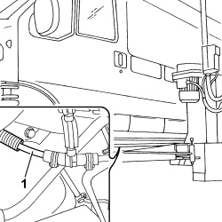
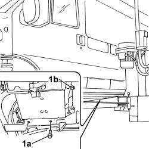
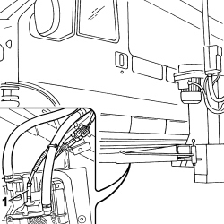

5020M38 ADDITIONAL HEATER FUEL METERING PUMP - R.R.
- Path
- Procedures > 50 AUXILIARY UNITS > 5020 HEATER > 5020M SUPPLEMENTARY INDEPENDENT HEATER > 5020M38 ADDITIONAL HEATER FUEL METERING PUMP - R.R.
- Kind
- repair procedure (removal / refitting; the operation number is the code)
- Applies to
- all engines; all production periods
- Interactive page
- https://sloeber94.github.io/elrnDB-fDct/en/#/244001256
Applies to: all engines; all production periods
 Removing
Removing
 Refitting
Refitting- Disconnect the negative battery terminal.
- Raise the vehicle on the lift.
- Position a suitable container for collecting the fuel.
1. Disconnect the pipe from the coupling with the fuel supply pipe from the pump loosening the retaining band.

Applies to: all engines; all production periods
1. Support the weight of the heater unit and loosen the bolts (1a) and the nuts (1b) fixing the independent heater unit mounting bracket.

Applies to: all engines; all production periods
1. Disconnect the fuel inlet pipe from the independent heater loosening the retaining band.
- Remove the fuel supply pipe to the additional independent heater.

Applies to: all engines; all production periods
Refitting
Removing- Connect the fuel supply pipe to the independent heater unit using the retaining band.
- Fasten the support for the independent heater unit to the bodyshell tightening the nuts and bolts to the recommended torque.
Value - daNm | Fastening | Component | Ø | Validity |
|---|---|---|---|---|
2 | Nut | ADDITIONAL HEATER BOILER | M8 | T.T |
Value - daNm | Fastening | Component | Ø | Validity |
|---|---|---|---|---|
2 | Bolt | ADDITIONAL HEATER BOILER | M8 | T.T |
- Connect the pipe to the coupling with the fuel supply pipe from the pump using the retaining band.
- Lower the vehicle on the lift.
- Connect the negative battery terminal.